Before you start, a few things to know
This is the hub in year 3 of the program: a Regional West intensivist runs the console for five hospitals, and Intercept backs them up. Tonight the census comes from four different record systems.
- Open the prototype on Monitoring. If you've already played it, use Prototype › Reset prototype first.
- Walter Pierce is already on the page, at Regional West (the hub's own ICU), stable on the ventilator. Linda Shaw isn't: she arrives at Sidney's ED with the scenario.
- New to the page? The Scenario 1 storyboard walks through the hospital tabs, the quick filters, the monitoring cards and the alert notifications.
- Two patients, two threads: Walter's plays from his alert's pathway, Linda's from her overflow and her transfer. Follow the beats in order and both finish in about two minutes.
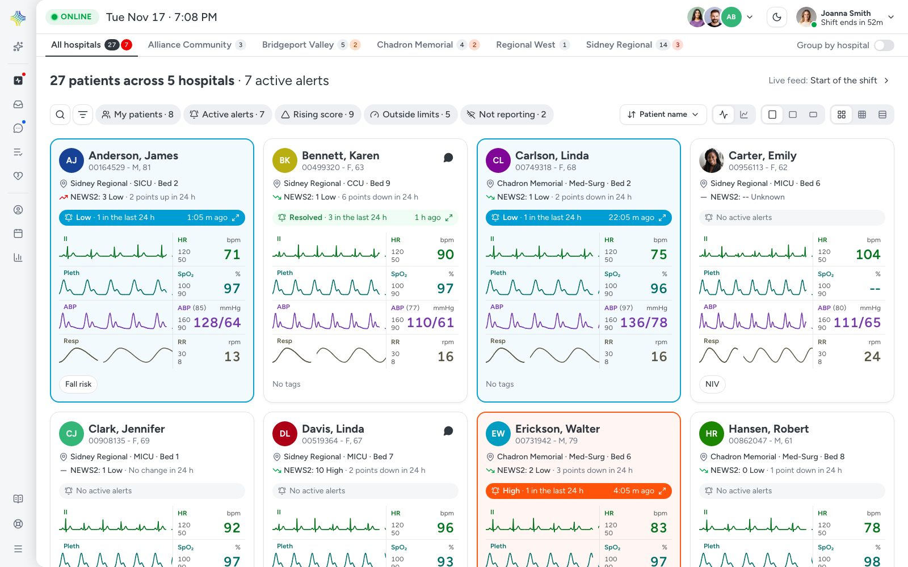
1. One census, four EHRs
03:10Every patient shows in the same panel layout, whichever hospital they're at and whichever record system it runs: Epic at Regional West, Cerner at Alliance, Meditech at Chadron and Sidney, TruBridge at Bridgeport. Nothing in the intensivist's workflow changes by site.
Steps
- Point at the hospital tabs: Regional West is one of five, and every card looks the same whichever system its hospital runs.
2. Two events at once
03:10 – 03:11Walter Pierce, 71, COPD and obesity, on a ventilator in Regional West's ICU, desaturates to 86%. A minute later Sidney's ED calls a stroke code: Linda Shaw, 66, sudden left-sided weakness, last known well 02:30, NIHSS 9. She has atrial fibrillation and stopped her blood thinner four months ago because of cost. Both escalate within two minutes. The ranking puts them first and says why.
Steps
- Open Prototype at the bottom of the Sidebar and pick Scenario 5: Surge night.
- About 2 seconds later Walter's card turns red: Critical, NEWS2 10 High, SpO₂ 85–86% flagged. 6 seconds later Linda joins Sidney's ED with her own Critical alert.
- A toast, 2 Critical alerts in a minute, says how they rank and why: Walter #1 (SpO₂ 86% on the ventilator, NEWS2 up 5 in 4 h); Linda after him, because NEWS2 doesn't score a stroke.
- Press Active alerts: the alerts in priority order, Walter first.
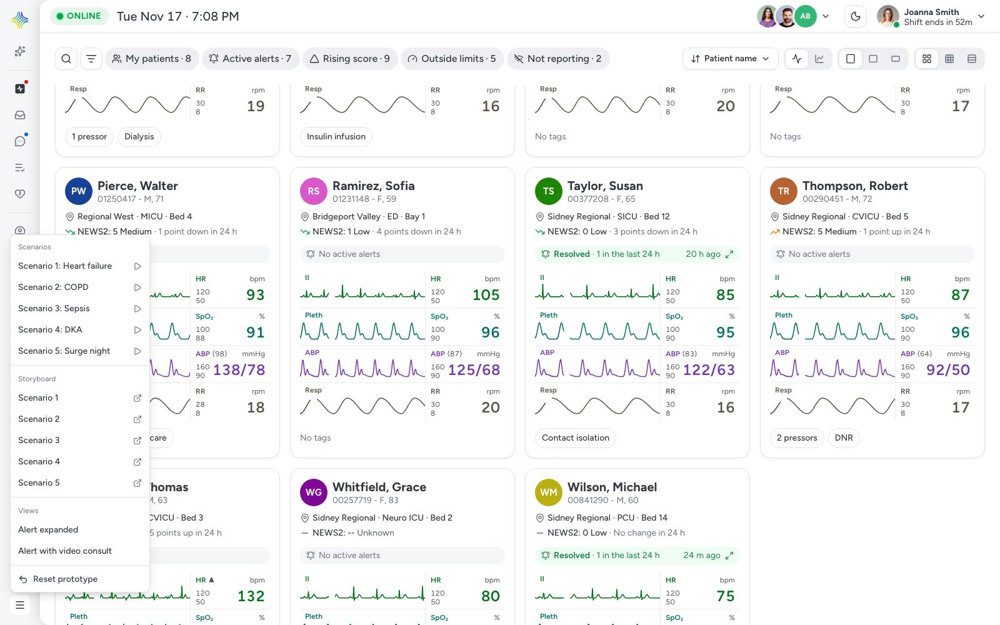
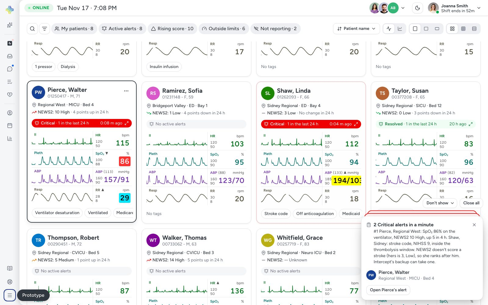
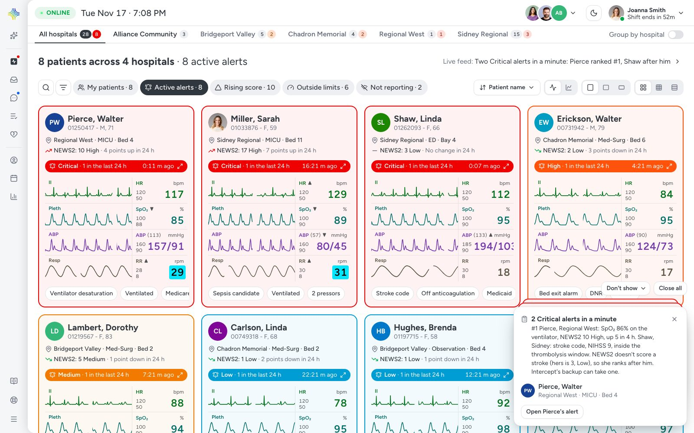
3. Overflow
03:12 – 03:31The hub intensivist takes Walter. The platform offers Linda's stroke alert to Intercept's backup intensivist with one click, sending the full panel, the CT images and the NIHSS. Intercept connects in under 5 minutes and runs the stroke code, while the hub stays on Walter.
Steps
- Click Walter's alert bar, then the camera button right of his name. Lauren Fisher, RN answers at the bedside and the AI Notetaker starts.
- About 5 seconds after the call connects, a toast: Send Shaw to Intercept's backup?
- Click Pathway on his NEWS2 line and Accept his ventilator and bronchodilator plan (beat 5 plays on its own from here). Close his alert.
- Click Linda's alert bar. Pathway on her NEWS2 line has her suggested Acute ischemic stroke: thrombolysis pathway (labetalol, tenecteplase, CT angiogram, neuro checks). Leave it: the backup runs it. Under her alert, Overflow to backup coverage: Mark Sullivan, MD, Intercept's backup intensivist, why now, and what goes with it.
- Click Send to Intercept backup. The alert reads "Escalated to Intercept backup intensivist", and the backup's steps come in: accepted at 03:13, on video with Sidney's ED at 03:16 (3 min 50 s after the offer), labetalol, then tenecteplase at 03:31, door-to-needle 39 min.
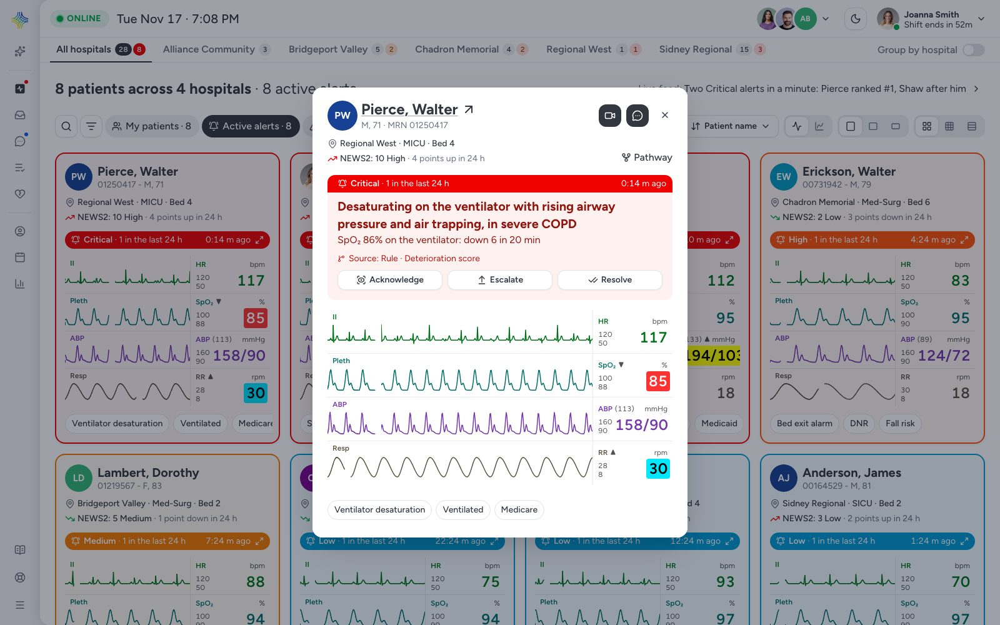
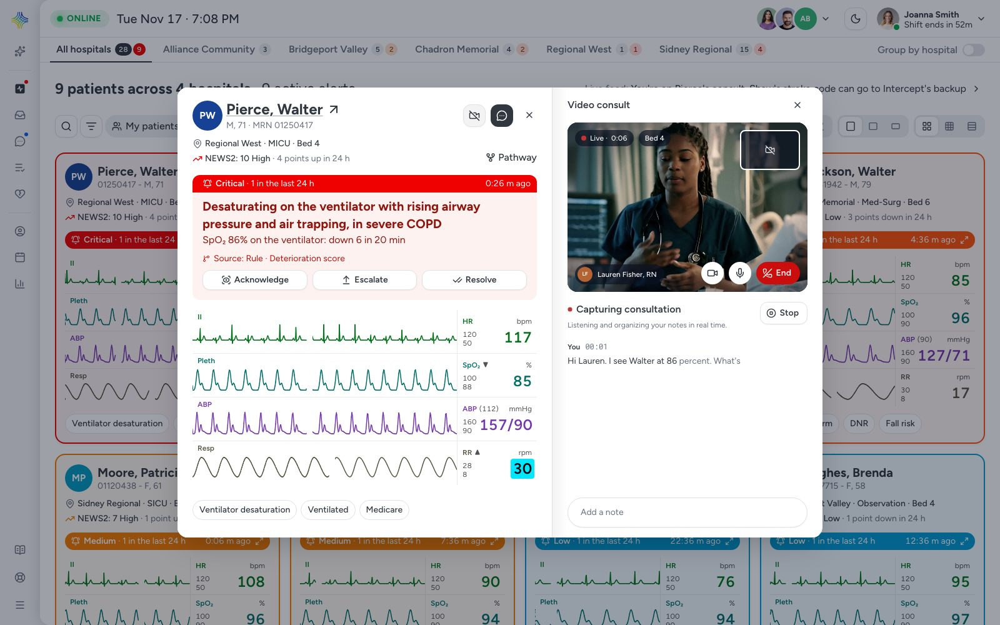
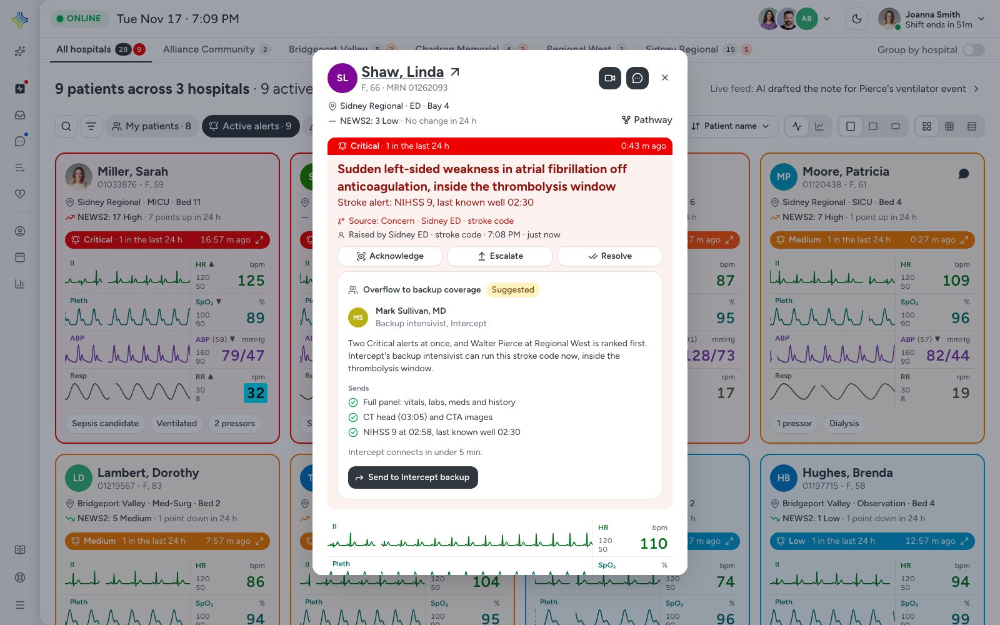
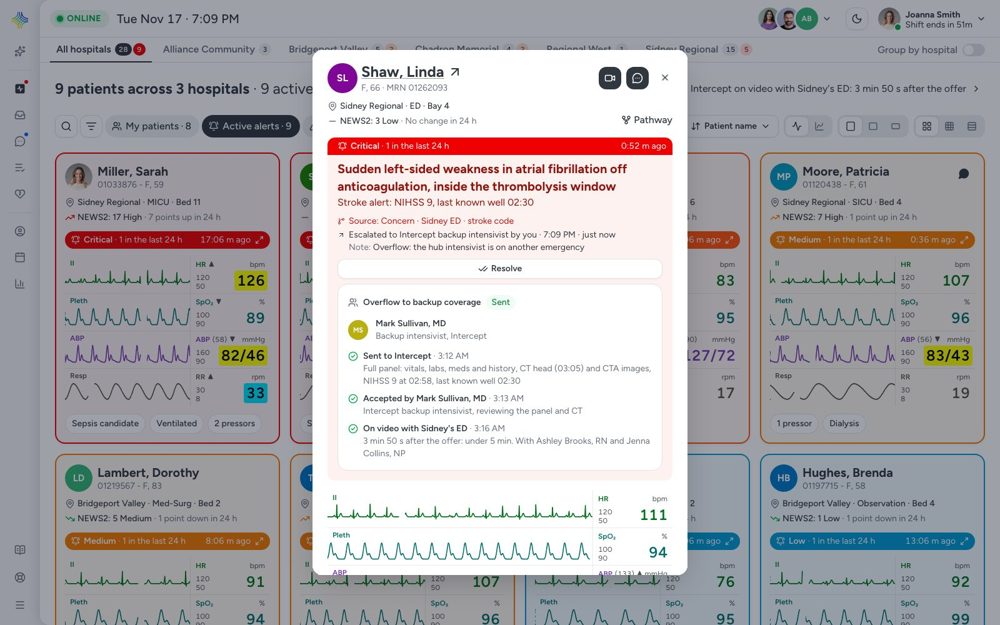
4. The right transfer, faster
03:40 – 04:38Linda gets thrombolysis at Sidney under remote direction. Then the CT angiogram shows a right M1 occlusion, a large-vessel stroke that needs a thrombectomy Sidney can't do. So the platform supports the transfer that should happen: it shows the receiving centers and what each can do, builds the transfer packet from her record, and logs door-in-door-out.
Steps
- About 20 seconds after you sent her, the backup's log adds CTA: right M1 occlusion and a toast says Transfer needed.
- Click Pathway on her NEWS2 line. First her stroke pathway, now Active: the backup ran it and Sidney's APP, Jenna Collins, NP, co-signed. Scroll down to Transfer, Transfer needed: what she needs against Sidney tonight, the receiving centers (Front Range Comprehensive Stroke Center, Platte Valley; Regional West listed, no thrombectomy overnight), the transport, the transfer packet built from the record, and door-in-door-out from 02:52.
- Click Request transfer, keep Front Range and the helicopter, write why ("Right M1 occlusion: needs a thrombectomy, not available at Sidney") and click Request transfer.
- The packet is sent to Front Range. About 15 seconds later she leaves Sidney at 04:38: Door-in-door-out 1 h 46 min, under the 2 h goal, and her alert resolves (Transferred).
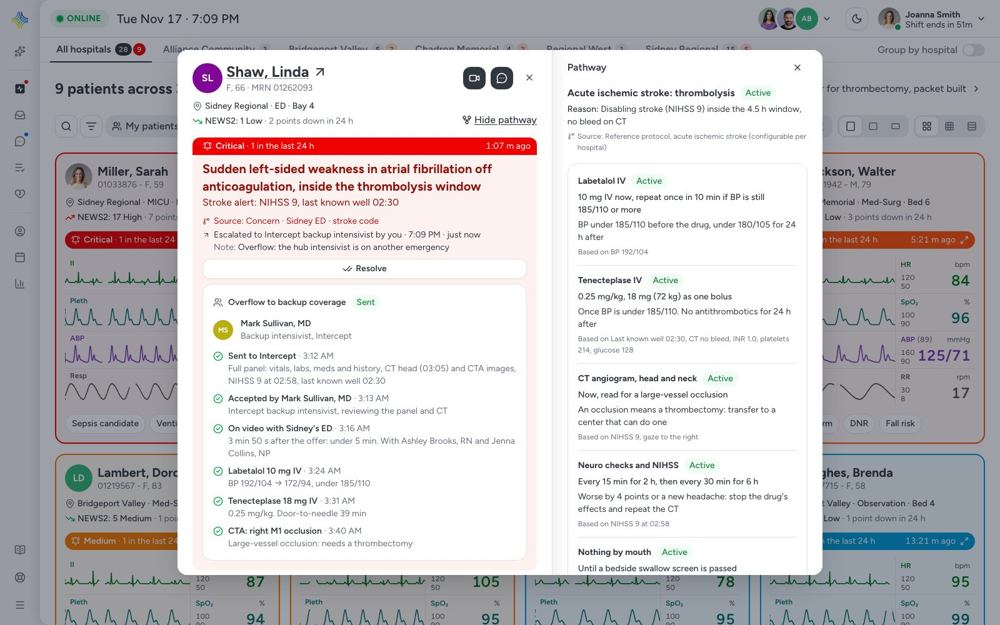
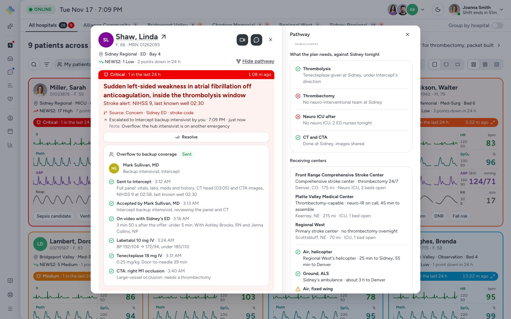
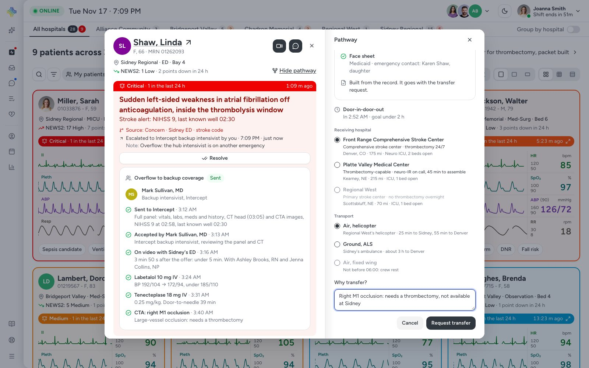
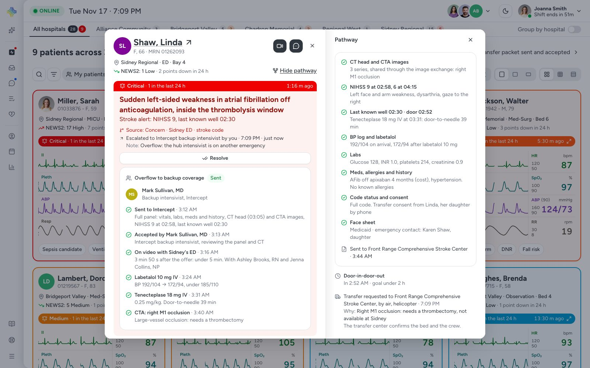
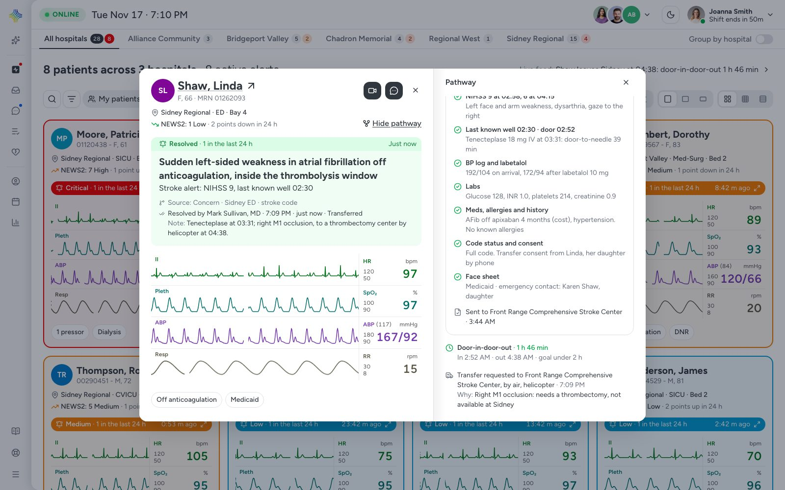
5. Walter stabilized
03:20 – 04:30Back at Regional West, the ventilator changes and the bronchodilator plan are in: more oxygen, a slower rate so he can breathe out, nebulizers in line, a steroid, and his nurse suctions a thick plug. By 04:30 he's at 92% and his score drops back down the list.
Steps
- (Accepted in beat 3.) His pathway: FiO₂ 0.40 → 0.60, rate 18 → 14 with I:E 1:4, albuterol and ipratropium in line, methylprednisolone, suction, chest X-ray and ABG. It goes to Neil Foster, MD for co-signature.
- About 12 seconds after you accept it his alert resolves: SpO₂ 92%, auto-PEEP 3, NEWS2 5. With Active alerts on, his card leaves the list.
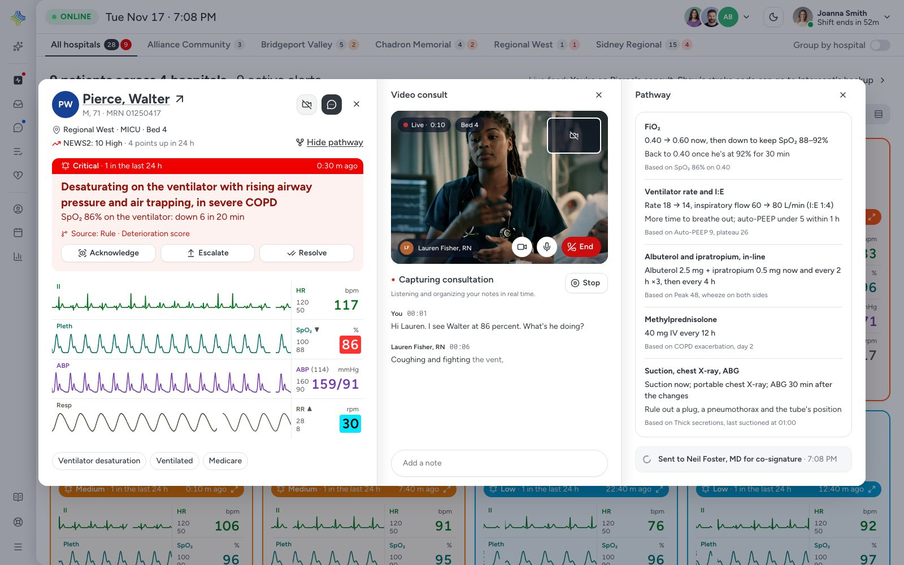
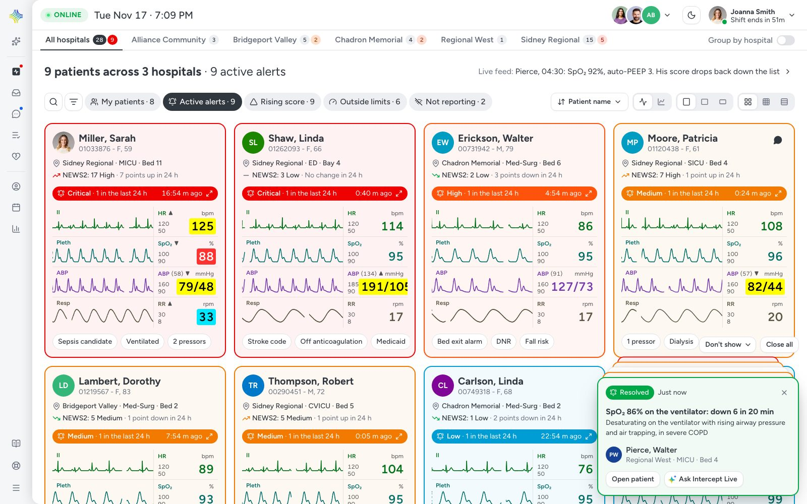
6. Documentation returned
05:00 – 07:00For each encounter, the AI drafts a note from the data and the call; the intensivist edits and signs. The handoff counts the minutes of documentation saved this shift, and the 07:00 handoff report builds itself from the night.
Steps
- A few seconds after each patient's thread ends, their note is drafted. A toast says Pierce's event note is drafted, with Open patient; Linda's is drafted for Mark Sullivan, MD to sign.
- Once both are in, a toast: 07:00 handoff report is ready. If the stack hides it, click the stack to spread it, then Open handoff.
- Ask Intercept Live opens on the report: Overnight (each patient's outcomes with the numbers written for the report), Documentation (2 notes drafted by AI, about 42 min of typing saved), then the patients, sickest first.
- Open Walter's page › Notes: the Tele-ICU event note, AI Scribe, Draft, with Review and sign.
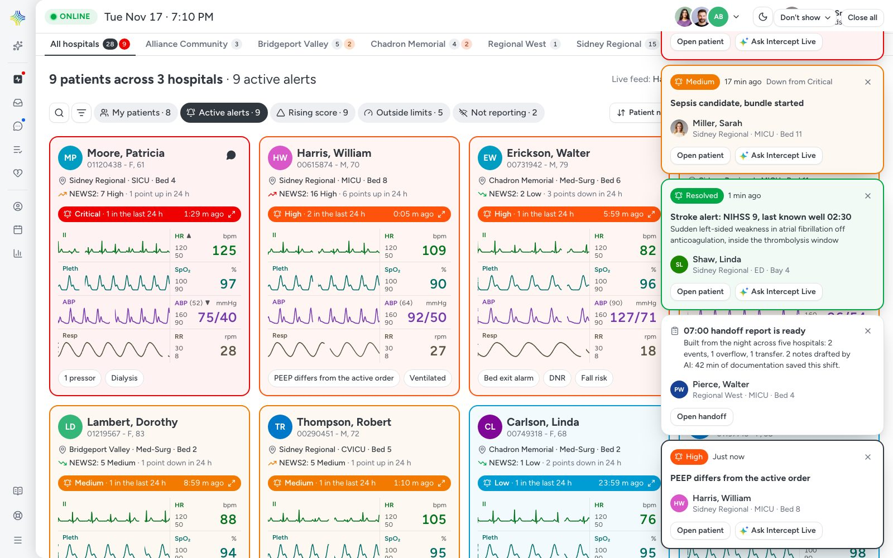
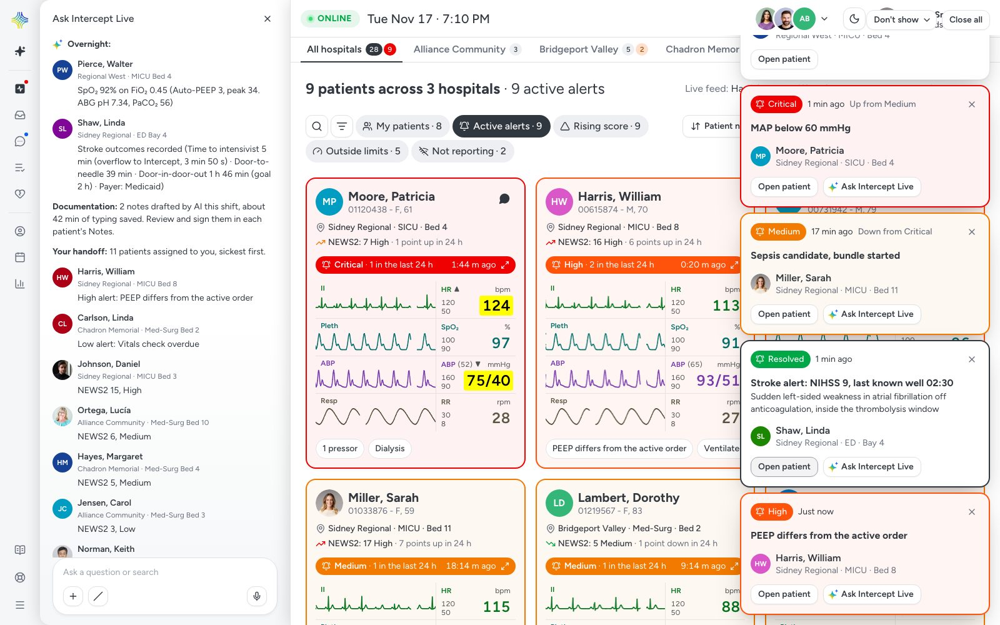
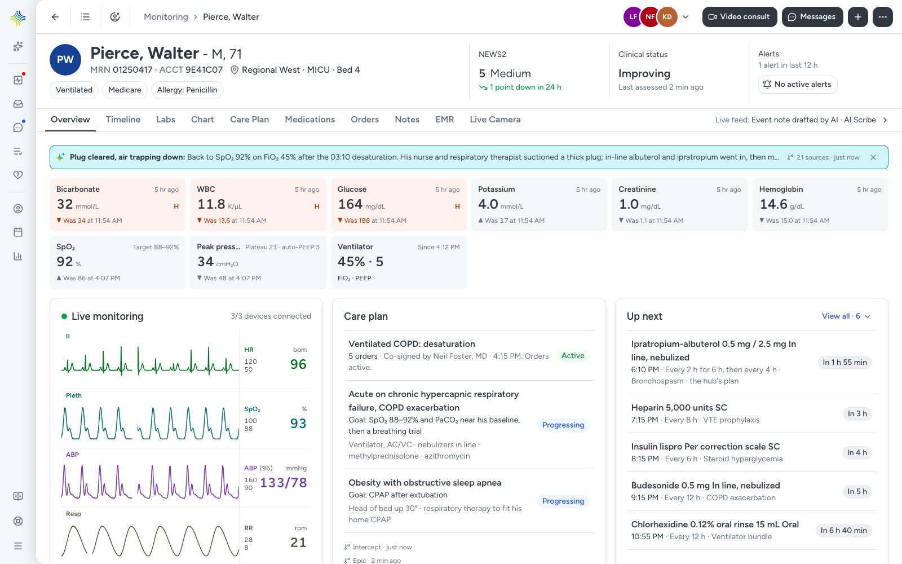
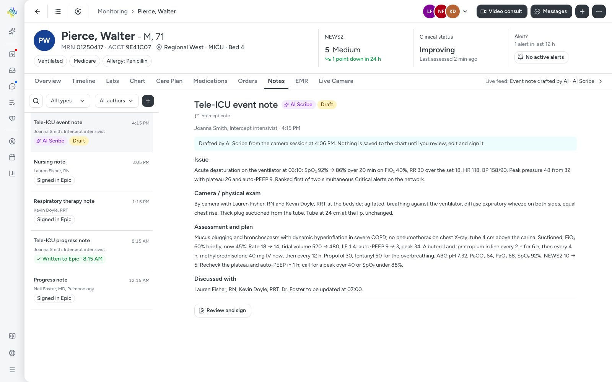
Known gaps
Where the prototype differs from the scenario, in case someone asks.
| What the audience sees | The scenario | Why |
|---|---|---|
| Linda ranks after Walter, and can rank after an older Critical alert on a High score (Sarah Miller's) | "The risk ranking puts both at the top and shows why" | The ranking is severity, then the score's band, then its 4 h rise; NEWS2 doesn't score a stroke. Whether a time-critical alert (a stroke code) should rank by its window is an open decision |
| A census of 28 patients across five hospitals | 12 patients across five sites | The prototype keeps its fuller census; Regional West has one patient, Walter |
| The night passes in about two minutes; the alerts' steps show the night's times, the rest of the screen today's | 03:10 to 07:00 | The prototype runs on the real clock |
| The overflow offer is on Linda's alert as soon as it fires; only its toast waits for Walter's consult | The hub takes Walter, then the platform offers Linda | When the platform offers overflow is open (PRD Alert maximized modal, AMM-028); see beat 3 |
| The backup's steps are scripted; the hub sees them on Linda's alert | Intercept connects and directs thrombolysis | Routing to Intercept's coverage and its acceptance are mock; the backup's own console isn't built |
| The hub picks the receiving center and requests the transfer | The platform supports the transfer | Who requests it (hub, backup, Sidney) is open; centers, distances and the bed board are illustrative (Mock) |
| The minutes saved show in the notices and the handoff | "A shift counter shows minutes of documentation saved" | Where a standing counter lives (My shift, the header) is open |
| Payer tags show as flags on Walter (Medicare) and Linda (Medicaid) only | Payer tags on every patient, marked "reporting only" | The census-wide payer tags of the demo's run order aren't built yet |
| Tenecteplase dose, BP thresholds, vent settings and the 2 h door-in-door-out goal | — | Illustrative values; they need the scenario's clinical review |